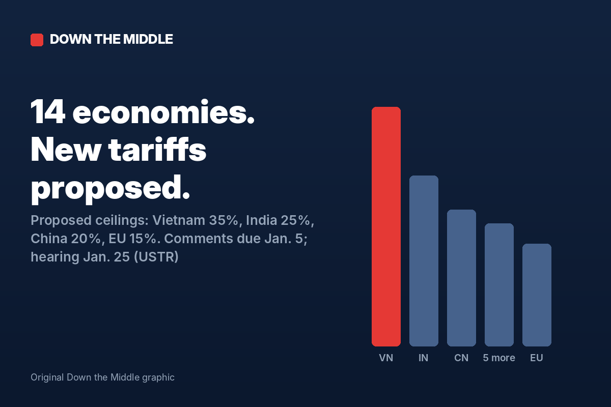
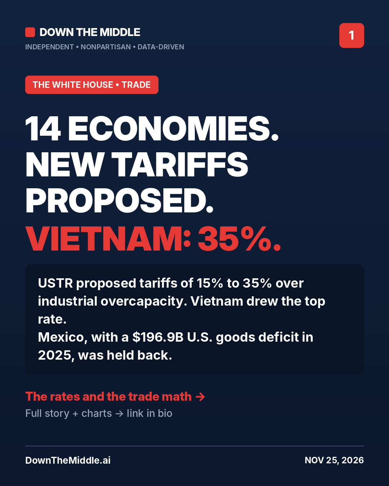
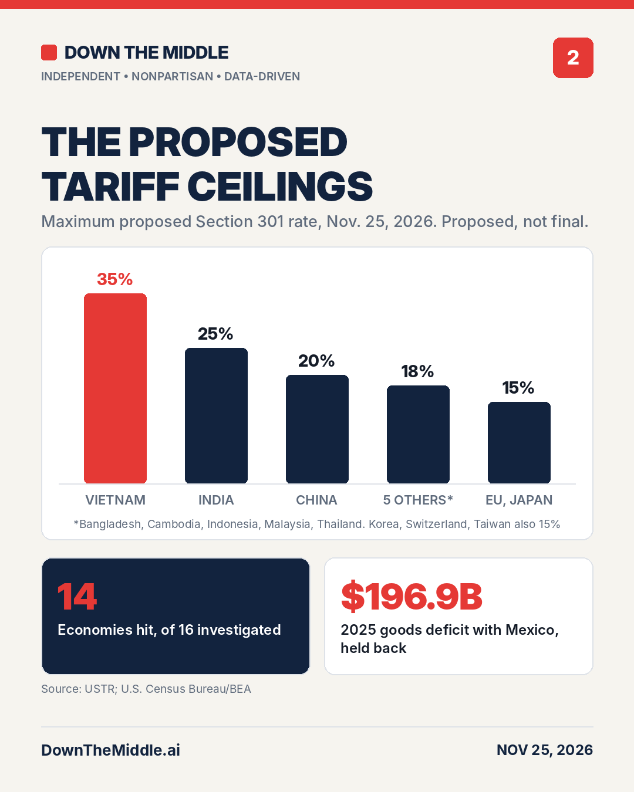

The White House Proposed New Tariffs on 14 Economies. Vietnam Got the Highest Rate, Not China.
November 25, 2026 · Independent, nonpartisan analysis

The Office of the U.S. Trade Representative on Wednesday proposed new tariffs on 14 economies, including China, the European Union and Japan, after concluding that their industrial policies create “structural excess capacity” that burdens U.S. commerce. [1] [2] The proposed rates run from 15% for the EU, Japan, South Korea, Switzerland and Taiwan up to 35% for Vietnam. [1] [3] China’s proposed rate is up to 20%. [1]
Nothing takes effect yet. The rates are proposals open for public comment until Jan. 5, with a hearing on Jan. 25. [1] [2] Two of the 16 economies USTR investigated, Mexico and Norway, got no determination for now. [1] [4] The move comes three weeks after Republicans lost both chambers of Congress in the midterms. [4] [8]
By the numbers
Figures from USTR’s announcement and Census trade data.
What happened
USTR opened the investigations on March 11 under Section 301 of the Trade Act of 1974, a law that lets the executive branch act against foreign practices it finds unreasonable, after an investigation and a chance for public comment. [1] [2] [13] That process is the main legal difference from the emergency-power tariffs the Supreme Court struck down in February. [2] [6] On Wednesday, USTR found the practices of 14 economies “unreasonable” and proposed duties on each. [1] [2]
Most rates are stated as a ceiling (“up to”) and are “net of” tariffs already in place under Section 301, meaning they are meant to set a total rather than stack on top. [1] [2] For the EU, Japan, Korea, Switzerland and Taiwan, the ceiling also counts normal duties. [1] For 13 of the 14, goods already covered by national-security tariffs (steel, aluminum, copper, autos, lumber, patented drugs and chips) are excluded; China’s notice has no such exemption. [2] [3] [4] A senior official told reporters the new duties would not stack on those sector tariffs, and that USTR was still reviewing Mexico and Norway, with no timeline. [4]
The notices also list fallback rates. Vietnam, India and Singapore would get lower rates (20%, 17% and 10%) if they reach trade agreements. [1] [2] For the others, the notices float higher alternates, up to 40% for China and 25% for Korea, Taiwan and several Southeast Asian economies. [2] [3]
The proposed rates, by economy
Maximum proposed Section 301 tariff in USTR’s Nov. 25 notices. Red marks 25% or more. Hover or tap a bar for details.
Proposed, not final. Rates are ceilings open for comment until Jan. 5, 2027, and are “net of” existing Section 301 tariffs. Deal-based fallbacks from USTR; China’s exemptions per Baker McKenzie’s reading of the notices. [1] [2]
Insight 1
The highest rate went to the country that gained the most from the China tariffs
China has been the face of the overcapacity argument, but Vietnam drew the top rate, 35%, and India’s 25% is also above China’s. [1] The trade data hints at why. In 2025, as tariffs on China climbed, U.S. imports from China fell $130.4 billion to $308.4 billion, while imports from Vietnam rose $57.3 billion and imports from Taiwan rose $85.2 billion. [9] USTR doesn’t frame its findings as being about rerouted Chinese goods, and trade shifts have many causes. But the result is a rate structure aimed as much at where imports moved as where they came from. China’s 20% cap, meanwhile, matches the rate agreed in last year’s U.S.–China truce, which expires Jan. 10. [1] [2] [4] One caveat: a senior official said China’s 20% would come on top of the roughly 25% first-term tariffs, while Baker McKenzie says the notices don’t spell out how they interact. [2] [4]
Imports shifted from China to Vietnam and Taiwan in 2025
U.S. goods imports, billions of dollars, Census basis. Hover or tap a bar for details.
2025 figures and the year-over-year changes are from the Census Bureau and BEA annual 2025 trade release. 2024 bars are derived by subtracting those reported changes from the 2025 levels. [9]
Insight 2
Mexico runs the third-largest deficit on the list, and it was held back
Of the 16 economies investigated, Mexico had the third-largest U.S. goods deficit in 2025, $196.9 billion, behind only the EU ($218.8 billion) and China ($202.1 billion) and ahead of Vietnam ($178.2 billion). [9] Yet USTR made no determination on Mexico, or on Norway, whose trade with the U.S. is far smaller. [1] [9] USTR gave no reason, and the official briefing reporters declined to give a timeline. [2] [4] Canada, the third member of the North American trade pact, was never in this probe. [13] Whatever the reason, the biggest trade gap that stays untouched by this round is right next door.
2025 goods deficit with the investigated economies
U.S. goods trade deficit in 2025, billions of dollars, Census basis. Red is the economy with no determination yet. Hover or tap a bar for details.
Singapore, Cambodia, Bangladesh and Norway are not shown; the release passages we could verify did not include their 2025 balances. The $1.09 trillion combined figure in the tiles is our sum of the 11 proposed-rate economies shown. [9]
Insight 3
For allies, it’s a few points. Nothing changes before a new Congress is seated.
For the EU, Japan and Korea, the 15% ceiling is a modest step up from the 10% or 12.5% forced-labor tariffs imposed in July, because the new rates are meant to replace rather than add to those. [1] [10] [12] The bigger leverage is in the fallbacks: three economies get a lower rate if they sign a deal, and the rest face a higher alternate if they don’t. [1] [2] [3] The calendar matters too. The new Congress, with Democratic majorities in both chambers, is seated Jan. 3; the China truce expires Jan. 10; comments close Jan. 5 and the hearing is Jan. 25. [1] [4] Baker McKenzie expects final action no earlier than late January. [2] Section 301 does not require a vote of Congress, so lawmakers’ main tools would be new legislation or the courts. [12]
How we got here
Solid dots are documented events. Dashed dots are scheduled or expected. Earlier history is in yesterday’s post.
- Feb 20, 2026Supreme Court
Strikes down the emergency-power (IEEPA) tariffs. [2] [10] - Mar 11USTR
Opens overcapacity probes of 16 economies. [1] [13] - MayUSTR
Hearings; nearly 140 witnesses and 1,070 written comments in all. [1] [2] - JulUSTR
Forced-labor Section 301 tariffs take effect on about 60 economies. [2] [10] - Nov 3Voters
Democrats win both chambers of Congress. [4] [8] - Nov 24WSJ report
New tariffs reported to be imminent; USTR briefs congressional committees. [4] - Nov 25USTR
Proposes rates of 15% to 35% on 14 economies; no determination for Mexico and Norway. [1] - Jan 3, 2027Congress
New Congress seated. Scheduled - Jan 5USTR
Comments and requests to testify due. Scheduled [1] - Jan 10U.S.–China
Trade truce expires. Scheduled [2] [4] - Jan 25USTR
Public hearing at the U.S. International Trade Commission. Scheduled [1] [2]
How each side makes its case
Same proposal, three readings
We describe each position in our own words and check it against the data.
The administration and supporters
- Subsidized factories abroad produce far more than demand supports and dump the surplus on world markets; Greer says acting can “level the playing field for American workers.” [1] [4]
- This round followed the law: an investigation, comments and hearings, with another comment period before anything takes effect. [1] [2]
- Officials say the duties won’t stack on autos or steel and won’t exceed limits in existing trade deals. [4]
Critics, left and right
- The EU’s trade spokesman said Brussels “strongly reject[s] the premise” that Europe drives overcapacity. [6]
- The progressive American Prospect calls China policy incoherent, with tariffs rising while chip export controls loosen. [6]
- Libertarian Reason argued in March that the probe treats nearly all foreign exports as unfair. A Reuters/Ipsos poll found 62% would back repealing the tariffs. [4] [11]
What the data shows
Down the middle
Both camps have part of the story right. The administration did what critics of the struck-down tariffs asked for: it used a law Congress wrote, ran a months-long investigation, took over a thousand comments and left room for more before anything takes effect. [1] [2] Even Lori Wallach of Rethink Trade, a frequent critic of corporate trade deals, said this was the approach the administration “should have taken in the first place.” [6] And for close allies, the increase is a few points. [1] [10] But the trade partners being targeted reject the premise, a Reuters/Ipsos poll found 62% would back repealing the tariffs, and tariffs are already at their highest effective level in nearly 80 years. [4] [6] [10] The data also complicates the simple China story: the rates are steepest where imports moved after the China tariffs, and the largest neighboring deficit, Mexico’s, is on hold. [1] [9] The real numbers to watch are not today’s ceilings but the final rates after the January hearing.
What to watch
Comments and hearing: how many businesses and governments weigh in by Jan. 5, and what changes after the Jan. 25 hearing. [1] China: whether the truce is extended before Jan. 10, and how the 20% interacts with older tariffs. [2] [4] Deals: whether Vietnam, India or Singapore sign agreements to get their lower rates; the official pointed to the G20 summit in Miami in December. [1] [4] Mexico and Norway: whether USTR issues determinations later. [4] Congress and courts: whether the incoming Democratic majorities move to limit Section 301 tariffs, and how the court challenge to July’s forced-labor tariffs goes. [12]
Share it


Sources and primary documents
- [1] Office of the U.S. Trade Representative (primary document) — USTR makes determinations and proposes actions in 14 Section 301 investigations relating to structural excess capacity (Nov 25, 2026)
- [2] Baker McKenzie Global Import Blog — USTR proposes Section 301 tariffs on 14 economies over structural excess capacity (Nov 25, 2026)
- [3] Sandler, Travis & Rosenberg — Section 301 tariffs of 15 to 40 percent proposed on 14 trading partners (Nov 2026)
- [4] RTÉ News (wire report) — US proposes new tariffs on trading partners, including EU (Nov 25, 2026)
- [5] Trend & Ticker — Section 301 tariffs proposed on 14 economies, Vietnam at 35% (Nov 25, 2026)
- [6] The American Prospect (progressive opinion) — Trump’s incoherent tariffs (Nov 25, 2026)
- [7] ABC News — Trump admin proposes new tariffs on China, EU and 12 other trading partners (Nov 25, 2026)
- [8] TVP World (wire report) — Trump unveils new tariffs over excess industrial capacity, undeterred by midterms defeat (Nov 25, 2026)
- [9] U.S. Census Bureau and BEA (primary data) — U.S. International Trade in Goods and Services, December and Annual 2025 (Feb 19, 2026)
- [10] Tax Foundation — Trump tariffs tracker: rates, revenue and impact (updated Nov 23, 2026)
- [11] Reason (libertarian opinion) — The Trump administration just declared all foreign exports unfair (Mar 12, 2026)
- [12] Down the Middle — The White House is readying new tariffs on 16 economies (Nov 24, 2026), and the sources cited there
- [13] Office of the U.S. Trade Representative (primary document) — USTR initiates Section 301 investigations relating to structural excess capacity (Mar 2026)
Proposed rates are from USTR’s release; higher alternate rates and exemption details are from Baker McKenzie’s and Sandler, Travis & Rosenberg’s readings of the pre-publication notices. The senior official’s remarks, the Reuters/Ipsos poll and the Nov. 24 congressional briefing are as reported by RTÉ’s wire story. The Wallach and EU spokesman quotes are as reported by The American Prospect. The $1.09 trillion total and the derived 2024 import levels are Down the Middle’s calculations from Census/BEA figures. The July forced-labor rates are as documented in our earlier post.